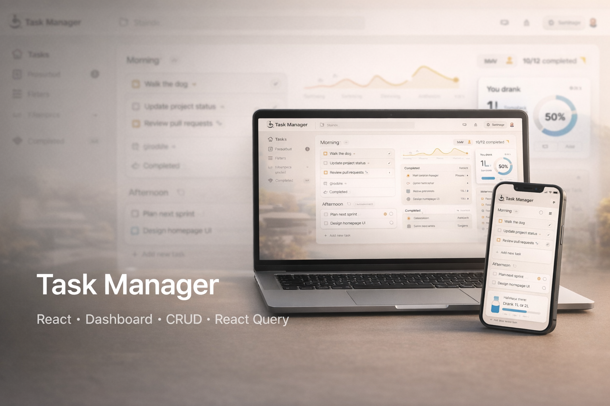
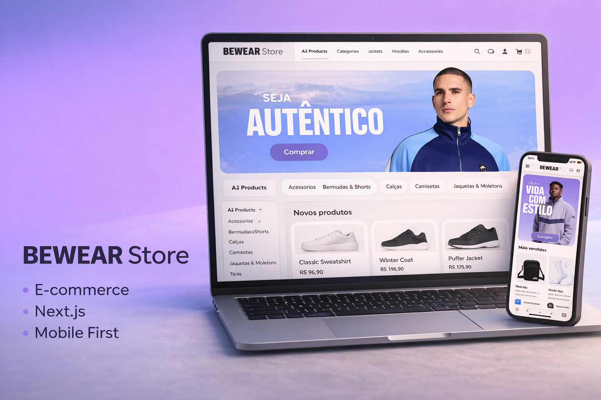

HTML
Estrutura semântica para páginas bem organizadas, acessíveis e preparadas para crescimento.
Desenvolvedor Full Stack em transição de carreira, unindo base sólida em infraestrutura, redes e cloud com foco atual em front-end moderno, experiência do usuário e evolução constante em engenharia de software.
Venho de uma trajetória forte em TI, infraestrutura e suporte, o que me deu uma visão muito prática sobre estabilidade, organização e experiência real do usuário. Hoje, aplico essa base no desenvolvimento de aplicações web com foco em código limpo, interfaces modernas e evolução contínua como desenvolvedor.
Atuo estudando e construindo projetos que reforçam minha transição para o desenvolvimento full stack, com atenção especial para arquitetura, componentização, design visual e entregas que façam sentido no mundo real.
Meu foco atual está em front-end moderno com base sólida em desenvolvimento web e uma visão técnica que também considera performance, organização e manutenção do projeto.
Estrutura semântica para páginas bem organizadas, acessíveis e preparadas para crescimento.
Estilização moderna com foco em layout, responsividade, hierarquia visual e consistência.
Lógica de interface, interatividade e manipulação de dados para experiências mais dinâmicas.
Mais segurança no desenvolvimento e melhor escalabilidade para projetos mais robustos.
Interfaces componentizadas, reutilização de código e organização pensada para evolução.
Base para aplicações modernas com foco em performance, roteamento e estrutura profissional.
Desenvolvimento de APIs e serviços com JavaScript no back-end, pensando em organização e escalabilidade.
Controle de versão para acompanhar mudanças, experimentar com segurança e manter histórico limpo do projeto.
Publicação, colaboração e versionamento de projetos com foco em portfólio, organização e trabalho em equipe.
Aqui estão aplicações reais publicadas, com foco em usabilidade, organização visual, componentização e construção de base sólida para futuras melhorias.

Gerenciador de tarefas com dashboard, separação por períodos do dia, atualização de status e acompanhamento visual de consumo de água. Projeto construído com foco em produtividade, clareza visual e fluxo intuitivo de uso.

E-commerce com foco atual em experiência mobile, vitrine visual de produtos e estrutura pronta para expansão de funcionalidades. O projeto prioriza navegação clara, hierarquia de conteúdo e base escalável para evolução comercial.
Estou aberto a oportunidades, conexões profissionais e conversas sobre projetos, desenvolvimento front-end e evolução na área de tecnologia.